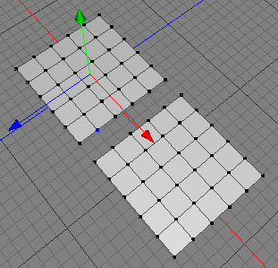

Weld Tool
The weld tool can be used either to weld two points together, or to collapse an edge.
 
Modes
The weld tool can only be applied to raw polygon objects. It's only available in point, edge and polygon mode.


To use the weld tool, click on one point of a raw polygon object. The selected point will now become blue (as in the first image). Then click on the second point you want to weld. The two points should be welded together (as in the second image).
If you weld two points of a polygon with n edges, a polygon with (n-1) edges will be created. If you weld two points of a triangle the entire triangle will be deleted.
Keys
- ESC: Use the ESC key to reset the tool.
Properties
- To: If you select "middle" then the new common welded point will be positioned in the middle of the two original points. If you chose "first point" then the new point will be at the position of the first point you clicked on.